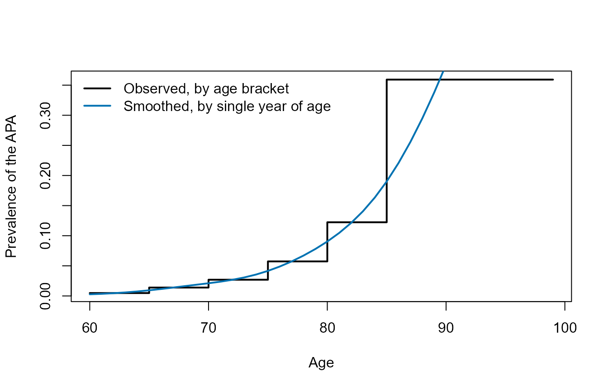

Getting started with healthexpectancies
Source:vignettes/how-to-use-healthexpectancies.Rmd
how-to-use-healthexpectancies.RmdThe package calculates health expectancies, and in particular disability-free life expectancies, with the Sullivan method. It also smooths prevalences of disability observed by age bracket, and projects prevalences and health expectancies. This vignette walks through a typical workflow, step by step:
- calculating life expectancies with and without disability with
CompleteDFLEtable(); - converting prevalences observed by age bracket into prevalences by
single year of age with
ApproxPrevalenceTable(); - projecting prevalences under simple hypotheses on life expectancies
with
prevalenceForecast(); - projecting prevalences with models estimated on past observations,
with
fitPrevalenceModel(),predict()andprojectPrevalence().
The methods of step 4 are described in detail in the vignette
vignette("projection-methods", package = "healthexpectancies").
The last section lists the datasets included in the package.
1. Health expectancies with the Sullivan method
Indicators
Three life expectancies at age are used throughout the package:
| Indicator | Meaning | Variable |
|---|---|---|
| total life expectancy | expected number of years lived | ex |
| disability-free life expectancy (DFLE) | expected number of years lived without disability (espérance de vie sans incapacité, EVSI, in French) | DFLEx |
| disability life expectancy (DLE) | expected number of years lived with disability (espérance de vie en incapacité, EVI, in French) | DLEx |
They add up: ex = DFLEx + DLEx. The shares of DFLE and
DLE in total life expectancy are pctDFLEx and
pctDLEx (in percent).
The Sullivan method combines a life table with the prevalence of
disability at each age (pix, a proportion between 0 and 1):
the person-years lived at each age are split into years lived with and
without disability according to the prevalence at this age, and then
summed over the following ages.
CompleteDFLEtable()
CompleteDFLEtable() takes a data frame with at least the
variables age, qx (probability of death
between age
and
)
or mx (central death rate), and pix. It
returns the same data frame, completed with all the variables of the
life table and the health expectancies. If pix is missing,
only total life expectancy is calculated.
The package includes the first example of the Sullivan manual
(sullivan), which CompleteDFLEtable()
reproduces:
res <- CompleteDFLEtable(sullivan[, c("year", "age", "mx", "qx", "pix")])
# life expectancies at birth, at 65 and at 85
res[res$age %in% c(0, 65, 85), c("age", "ex", "DFLEx", "DLEx", "pctDFLEx")]
#> age ex DFLEx DLEx pctDFLEx
#> 1 0 81.415174 66.573158 14.842015 81.76996
#> 66 65 19.865979 12.295134 7.570845 61.89040
#> 86 85 5.371792 2.616062 2.755729 48.70000The meaning of each variable of the output is given in the dataset
description_sullivan:
description_sullivan
#> heading description
#> 1 year Year
#> 2 age Age
#> 3 Px Mid-year population
#> 4 Dx No. deaths
#> 5 mx central death rate
#> 6 qx conditional probability of death
#> 7 lx numbers surviving to age x
#> 8 Lx person years lived at age x
#> 9 Tx total number of years lived from x
#> 10 ex total life expectancy
#> 11 pix proportion with disability
#> 12 DFLx person years lived without disability
#> 13 DFTx total years lived without disability from age x
#> 14 DFLEx disability-free life expectancy
#> 15 pctDFLEx proportion of life spent disability-free
#> 16 DLx person years lived with disability
#> 17 DLEx with disability life expectancy
#> 18 pctDLEx proportion of life spent with disability
#> 19 MeanDAx average conjonctural age of person years lived with disability
#> 20 MedianDAx median conjonctural age of person years lived with disability
#> 21 ModalDAx modal conjonctural age of person years lived with disabilitySeveral series at once
If the input data frame contains the variables year
and/or sex, life expectancies are calculated separately for
each year and sex. Other grouping variables (for instance a region or a
social category) can be given with the argument categories.
This is used in the next section, with two years.
2. From age brackets to single years of age
Prevalences of disability are usually observed by age bracket only
(in surveys, sample sizes are too small to measure them at each age),
whereas the Sullivan method needs prevalences by single year of age.
ApproxPrevalenceTable() converts prevalences by bracket
into smoothed prevalences by single year of age. By default, it
minimises the second differences of the logit of prevalences, under the
constraint that the average prevalence of each bracket, weighted by the
population, is equal to the observed one.
The example uses the prevalence of the APA (allocation
personnalisée d’autonomie, the French benefit for older people with
long-term care needs), observed by 5-year age bracket from 60 to 85 and
over (FRAPAprevalence).
# Prevalences of the APA by age bracket, 2010 to 2024 (proportions)
apa <- FRAPAprevalence[FRAPAprevalence$decomp == 6, c("year", "age", "prevalence")]
head(apa)
#> year age prevalence
#> 1 2010 60 0.005174792
#> 2 2010 65 0.014897804
#> 3 2010 70 0.031050453
#> 4 2010 75 0.069224164
#> 5 2010 80 0.149172768
#> 6 2010 85 0.363697393
# Population by single year of age (both sexes), used as weights.
# The population is measured on 1 January: the population on 1 January of year Y
# is the population at the end of year Y-1, like the prevalences of the APA.
pop <- FRInseePopulation[FRInseePopulation$geo == "france" &
FRInseePopulation$age0101 %in% 60:99, ]
pop$year <- pop$year - 1
pop <- aggregate(popx ~ year + age0101, data = pop, FUN = sum)
names(pop) <- c("year", "age", "popx")
pix <- ApproxPrevalenceTable(apa,
agecuts = seq(60, 85, 5), # lower bounds of the brackets
agemin = 60,
agemax = 99,
weights.tab = pop,
categories = "year")
# one row per year and single year of age, with the observed prevalence
# of the bracket (prevalence.raw) and the smoothed prevalence (prevalence.approx)
head(pix)
#> year age agebracket prevalence.raw prevalence.approx
#> 1 2010 60 [60,65) 0.005174792 0.002991059
#> 2 2010 61 [60,65) 0.005174792 0.003846648
#> 3 2010 62 [60,65) 0.005174792 0.004941532
#> 4 2010 63 [60,65) 0.005174792 0.006328417
#> 5 2010 64 [60,65) 0.005174792 0.008052231
#> 6 2010 65 [65,70) 0.014897804 0.010127897
p19 <- pix[pix$year == 2019, ]
plot(p19$age, p19$prevalence.raw,
type = "s", lwd = 2,
xlab = "Age", ylab = "Prevalence of the APA")
lines(p19$age, p19$prevalence.approx, lwd = 2, col = "#0072B2")
legend("topleft", bty = "n", lwd = 2, col = c("black", "#0072B2"),
legend = c("Observed, by age bracket", "Smoothed, by single year of age"))
Prevalence of the APA in 2019: observed by age bracket (steps) and smoothed by single year of age (line).
Health expectancies of the APA
To calculate life expectancies, the prevalences are merged with
mortality rates. FRInseeMortalityForecast2026 contains the
mortality rates observed until 2022 and projected by Insee afterwards.
The life table stops at age 104, where the probability of death is set
to 1, and prevalences after age 99 are set equal to the prevalence at
99.
# keep year, age and smoothed prevalence
pix <- data.frame(year = as.numeric(pix$year),
age = pix$age,
pix = pix$prevalence.approx)
# extension to ages 100-104 (same prevalence as at age 99)
last <- pix[pix$age == 99, ]
pix <- rbind(pix, do.call(rbind, lapply(100:104, function(a) transform(last, age = a))))
# mortality rates, both sexes, ages 60 to 104
mort <- FRInseeMortalityForecast2026
mort <- mort[mort$sex == "all" &
mort$geo %in% c("France excluding Mayotte", "France") &
mort$def.age == "current age (approx)" &
mort$age %in% 60:104,
c("year", "age", "qx")]
mort$qx[mort$age == 104] <- 1
# life expectancies in 2010 and 2019
tab <- merge(pix[pix$year %in% c(2010, 2019), ], mort, by = c("year", "age"))
le <- CompleteDFLEtable(tab)
le[le$age %in% c(60, 75, 85), c("year", "age", "ex", "DFLEx", "DLEx", "pctDLEx")]
#> year age ex DFLEx DLEx pctDLEx
#> 6 2010 60 24.803463 22.323771 2.479692 9.997363
#> 21 2010 75 13.088135 10.382902 2.705233 20.669351
#> 31 2010 85 6.867716 4.146822 2.720894 39.618619
#> 51 2019 60 25.624908 23.162815 2.462093 9.608203
#> 66 2019 75 13.848563 11.169316 2.679247 19.346750
#> 76 2019 85 7.255699 4.543023 2.712676 37.386828Here, the “disability” is being a beneficiary of the APA:
DLEx is the expected number of years spent as a beneficiary
after age
.
Between 2010 and 2019, total life expectancy at 60 increased, while the
expected number of years spent as a beneficiary remained stable: the
share of life expectancy at 60 spent as a beneficiary decreased.
3. Projections under simple hypotheses on life expectancies
prevalenceForecast() projects prevalences from a
reference year, given projected mortality rates and a hypothesis on the
evolution of health expectancies:
-
"cstPreval": prevalences by age remain constant; -
"cstDFLE": DFLE remains constant at each age, so that all the gains in life expectancy are spent with disability; -
"cstDLE": DLE remains constant at each age, so that all the gains in life expectancy are spent without disability; -
"cstPctDFLE"or"cstPctDLE": the share of DFLE (or of DLE) in total life expectancy remains constant at each age (the two hypotheses are equivalent).
With the hypotheses on life expectancies, prevalences are obtained by
inverting the Sullivan method. At the youngest ages, where
prevalences are very low, this inversion can require negative
prevalences: the argument on_unfeasible = "clip" bounds
them to the interval 0 to 1 (with a warning), and recalculates life
expectancies accordingly.
# reference year 2019, projections for 2030 and 2040
tabref <- tab[tab$year == 2019, ]
tabproj <- mort[mort$year %in% c(2030, 2040), ]
hypotheses <- c("cstPreval", "cstDFLE", "cstDLE", "cstPctDLE")
fc <- do.call(rbind, lapply(hypotheses, function(h) {
f <- prevalenceForecast(tabref, tabproj, hypo = h, on_unfeasible = "clip")
f <- f[f$age == 60 & f$year == 2040, c("year", "ex", "DFLEx", "DLEx")]
data.frame(hypothesis = h, f)
}))
fc
#> hypothesis year ex DFLEx DLEx
#> 461 cstPreval 2040 27.06672 24.18326 2.883453
#> 4611 cstDFLE 2040 27.06672 23.16282 3.903902
#> 4612 cstDLE 2040 27.06672 24.59989 2.466832
#> 4613 cstPctDLE 2040 27.06672 24.46018 2.606536The four hypotheses give the same total life expectancy at 60 in 2040, since mortality is the same, but different numbers of years spent as a beneficiary of the APA.
4. Projections with models estimated on past observations
Instead of setting a hypothesis directly,
fitPrevalenceModel() estimates a model of the evolution of
prevalences on past years, and predict() uses it to project
prevalences. Four families of methods are available:
-
method = "trend": extrapolation of the trend of (the logit of) prevalences, at each age; -
method = "mortality": link between prevalences and mortality rates (possibly with an age shift); -
method = "target": hypotheses on life expectancies (constant value, linear trend, or change of a given percentage at a given horizon), estimated on past years; -
method = "shift": shift of the curve of prevalences towards older ages at a constant speed.
projectPrevalence() estimates the model, projects
prevalences and calculates life expectancies in one step. The example
below extrapolates the trend of the logit of prevalences at each age,
estimated on 2010-2019 (the years of the Covid-19 epidemic are left
out):
The projected prevalences are used to calculate life expectancies, so
the model must cover all the ages of the life table: here, it is
estimated on ages 60 to 104 (prevalences after age 99 being equal to the
prevalence at 99). Since the projection goes far beyond the estimation
period, predict() warns that the trend is extrapolated over
a long horizon (the warning is not displayed here).
# estimation table: prevalences by single year of age (60 to 104), 2010 to 2019
obs <- pix[pix$year %in% 2010:2019, ]
# projection years: mortality rates up to the last age of the life table
newdata <- mort[mort$year %in% c(2030, 2040), ]
proj <- projectPrevalence(obs, newdata = newdata, method = "trend", fit_years = 2010:2019)
proj[proj$age == 60, c("year", "ex", "DFLEx", "DLEx", "pctDLEx")]
#> year ex DFLEx DLEx pctDLEx
#> 1 2030 26.31772 23.98168 2.336044 8.876315
#> 46 2040 27.06672 24.83155 2.235168 8.257996The estimated model is kept as an attribute of the result, and its
results are available with the usual methods (coef(),
fitted(), residuals(), summary(),
as.data.frame()):
model <- attr(proj, "model")
model
#> Model of prevalences by age, method "trend" (scale: logit)
#> Years used for the estimation: 2010 to 2019 (10 years)
#> Series: 1
#> Ages: 60 to 104
#> Estimator: ols
#> Use coef(), as.data.frame(, what = ) and predict() to retrieve results and project prevalences.The assumptions of each method, their limits and a comparison on the
example of the APA are given in
vignette("projection-methods", package = "healthexpectancies").
5. Interactive example
The package includes a Shiny app, which illustrates projections of
prevalences under the hypotheses of prevalenceForecast().
It requires the packages shiny,
shinydashboard, plotly and
tidyverse, which are not needed to install the package
itself:
6. Datasets included in the package
All the datasets, except sullivan and
description_sullivan, concern France. Their full
description is available in their help pages (for instance
?FRAPAprevalence).
| Dataset | Content |
|---|---|
sullivan, description_sullivan
|
first example of the Sullivan manual, and description of the
variables of the output of CompleteDFLEtable()
|
| Prevalences | |
FRAPAprevalence |
prevalence of the APA by age bracket, all sexes, 2010-2024 (DREES, Aide sociale survey) |
FRDreesAPA |
share of beneficiaries of the APA by sex and age bracket, at home and in institutions, 2016-2024 (DREES) |
FRDreesAPA2017 |
share of beneficiaries of the APA by sex and age bracket, 2017 (DREES) |
FRDreesVQSsurvey2014,
FRDreesVQSsurvey2021
|
prevalences of disabilities by sex and age bracket, from the Vie quotidienne et santé (VQS) surveys of 2014 and 2021 (DREES) |
FRGaliEUSilc |
prevalence of general activity limitations (GALI) by sex and age bracket (SRCV survey, French part of EU-SILC) |
FRDreesEHPA |
share of people living in institutions for older people by sex and age (DREES, EHPA survey) |
| Population | |
FRInseePopulation |
population by sex and age on 1 January (Insee annual estimates) |
FRInseePopulationForecast2016,
FRInseePopulationForecast2021,
FRInseePopulationForecast2026
|
population projections of Insee (central scenario) |
| Mortality | |
FRInseeMortalityrates,
FRInseeMortalityrates_t69
|
observed mortality rates by sex and age (Insee) |
FRInseeMortalityForecast2016,
FRInseeMortalityForecast2021,
FRInseeMortalityForecast2026
|
observed and projected mortality rates by sex and age, from the population projections of Insee (central scenario) |